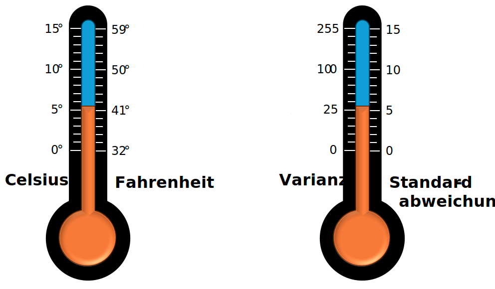

Varianz und Standardabweichung¶
Die Varianz und Standardabweichungen sind die wichtigsten Streumaße in der Statistik.
Je höher die Varianz bzw. die Standardabweichung ist, desto stärker sind die Datenpunkte verstreut.
Die Varianz und Standardabweichung hängen extrem eng zusammen. So eng, dass man sie nicht als zwei verschiedene Kennzahlen sehen sollte, sondern als die Selbe, die bloß verschieden dargestellt wird. Dies ist ähnlich wie mit der Messung von Temperaturen: Wenn es 100 °C (Celsius) ist, ist es auch 212 °F (Fahrenheit). Beide beschreiben das gleiche, jedoch etwas anders skaliert. So ist es auch mit der Varianz und der Standardabweichung. Wir werden sehen, dass man mit der Varianz oft einfacher rechnen kann, die Standardabweichung jedoch leichter von Menschen interpretierbar ist.

Motivation für die Varianz¶
Die Varianz soll messen, wie sehr die Datenpunkte vom Mittelwert abweichen.
Der naive erste Ansatz wäre, die Abstände zum Mittelwert einfach zu berechnen, aber das ist leider sehr fruchtlos, da die Summe dieser Abstände immer \(0\) ergibt! Das ist nicht gerade aussagekräftig, wenn für jede Datenmenge immer dieselbe Kennzahl herauskommt.
Es hat sich daher als nützlich herausgestellt, nicht direkt die Abweichungen von Mittelwert zu messen, sondern das Quadrat der Abweichungen vom Mittelwert zu messen und davon den Durchschnitt zu bestimmen.
In dieser Visualisierung ist das besonders gut ersichtlich:
Formel¶
Die mathematische Formel für die Varianz sieht etwas Gruselig aus.
Die Varianz bezeichnet man oft als \(\sigma^2\) und berechnet man wie folgt:
Formel für die Varianz mit Summenzeichen
Formel für die Varianz ohne Summenzeichen
Formel für die Standardabweichung
Die Standardabweichung wird oft mit \(\sigma\) bezeichnet und wird bestimmt, indem man von der Varianz die Wurzel zieht:
Beispiel
Gegeben Sie der folgende Datensatz, von dem wir die Varianz und Standardabweichung berechnen wollen:
| normaler Index | Kuchenverkäufe |
|---|---|
| \(x_1\) | \(4\) |
| \(x_2\) | \(6\) |
| \(x_3\) | \(2\) |
| \(x_4\) | \(3\) |
| \(x_5\) | \(10\) |
Um die Varianz zu berechnen, müssen wir zunächst das Arithmetische Mittel \(\bar{x}\) bestimmen. Hier also
Dann wird von jedem Datenpunkt berechnet, welchen Abstand er zum Mittelwert hat:
| normaler Index | Kuchenverkäufe | \(x_i - \bar{x}\) |
|---|---|---|
| \(x_1\) | \(4\) | \(5-4=-1\) |
| \(x_2\) | \(6\) | \(5-6=1\) |
| \(x_3\) | \(2\) | \(5-2=-3\) |
| \(x_4\) | \(3\) | \(5-3=-2\) |
| \(x_5\) | \(10\) | \(5-10=5\) |
Die Summe der Abweichungen ist immer \(0\) und daher absolut nichtssagend.
Um starke Abweichungen stärker zu betonen und schwache Abweichungen weniger zu betonen, werden die Quadrate dieser Abweichungen gebildet.
| normaler Index | Kuchenverkäufe | \(x_i - \bar{x}\) | \((x_i - \bar{x})^2\) |
|---|---|---|---|
| \(x_1\) | \(4\) | \(-1\) | \((-1)^2=1\) |
| \(x_2\) | \(6\) | \(1\) | \(1^2=1\) |
| \(x_3\) | \(2\) | \(-3\) | \((-3)^2=9\) |
| \(x_4\) | \(3\) | \(-2\) | \((-2)^2=4\) |
| \(x_5\) | \(10\) | \(5\) | \(5^2=25\) |
Von diesen Abweichungsquadraten berechnen wir nun den Durschnitt. Das Ergebnis dieser Rechnung ist nun endlich die Varianz \(\sigma^2\)!
Abschließend können wir nun noch die Standardabweichung \(\sigma\) bestimmen, indem wir von der Varianz die Wurzel ziehen:
Zusammengefasst: Bei dem Datensatz \((4, 6, 2, 3, 10)\) ist das Arithmetische Mittel \(\bar{x} = 5\), die Varianz \(\sigma^2=8\) und die Standardabweichung \(\sigma\approx 2{,}8284\).
Varianz schätzen
Berechnen Sie für die folgenden Datensätze zunächst die Mittelwerte. Bevor Sie die Varianz berechnen schätzen Sie zunächst, welcher Datensatz die größte und welcher die kleinste Varianz hat. Sortieren Sie die Datensätze ensprechen. Berechnen Sie dann die Varianz und überprüfen Sie ihre Vermutung.
\(A = (1, 2, 3)\), \(B = (2, 3, 4)\), \(C = (2, 2, 2)\), \(D = (0, 2, 4)\)
Tipp
\(0 = \sigma^2_C < \sigma^2_A = \sigma^2_B < \sigma^2_D\)
Lösung
\(\bar{A} = 2\), \(\sigma^2_A = \frac{2}{3} = 0{,}\bar{6}\)
\(\bar{B} = 3\), \(\sigma^2_B = \frac{2}{3} = 0{,}\bar{6}\)
\(\bar{C} = 2\), \(\sigma^2_C = 0\)
\(\bar{D} = 2\), \(\sigma^2_D = \frac{8}{3} = 2{,}\bar{6}\)
Varianz und Standardabweichung berechnen
Berechnen Sie (wenn möglich) die Varianz \(\sigma^2\) und die Standardabweichung \(\sigma\) in den folgenden Fällen:
a) \((8,12,5,17)\)
b) \((5,3,7,3,4,4)\)
c) \((5,3,7,3,4,42)\)
d) \((12,-17,-13,10,8)\)
e) \((-17,8,12,-13,10)\)
f) \((7, 9)\)
g) \((3)\)
h) \((1, 1, 1)\)
Tipp
In der Aufgabe Arithmetisches Mittel berechnen wurden für fast alle diese Beispiele bereits das Arithmetische Mittel berechnet. Es kann hier also genutzt werden.
Lösung
| Dataset | Varianz | Standard Abweichung |
|---|---|---|
| a | \(20.25\) | \(4.50\) |
| b | \(1.8889\) | \(1.3744\) |
| c | \(198.2222\) | \(14.0791\) |
| d | \(153.2\) | \(12.3774\) |
| e | \(153.2\) | \(12.3774\) |
| f | \(1.0\) | \(1.0\) |
| g | nicht berechenbar | nicht berechenbar |
| h | \(0.0\) | \(0.0\) |
Excel
Die Varianz kann in Excel mit Hilfe der Formel VAR.P
berechnet werden.
Die Standardabweichung kann in Excel mit Hilfe der Formel STABW.N
berechnet werden.
Varianz und Standardabweichung interpretieren¶
Oft fällt es Einsteigern die Varianz beziehungsweise Standardabweichung zu interpretieren. Und dies gestaltet sich auch tatsächlich als schwierig. Es gilt immer:
- Je größer die Varianz/Standardabweichung ist, desto größer sind die Schwankungen in den Daten.
Wenn die Daten normal verteilt sind (was genau das bedeutet, werden wir später untersuchen, doch für den Moment können Sie glauben, dass sehr viele Datensätze normal verteilt sind), so können wir mithilfe der einer einfachen Formel abschätzen, wie die Daten um das arithmetische Mittel verteilt sind. Das geht wie folgt:
Wenn der Datensatz normalverteilt sind und wir kennen das Arithmetische Mittel \(\bar{x}\) und die Standardabweichung \(\sigma\), so befinden sich
Variazionskoeffizient¶
Um die Varianz besser zu interpretieren, wird manchmal der Variationskoeffizient verwendet. Dieser übersetzt die Streuung in einen prozentualen Wert.
Formel
Der Variationskoeffizient \(v\) wird berechnet, indem man die Standardabweichung durch den Mittelwert teilt:
Beispiel
Ein Wertpapier, dessen Wert durchschnittlich bei 20 EUR liegt und zwischen 10 und 30 EUR schwankt, weist ein höheres Risiko auf als ein Wertpapier mit einem mittleren Wert von 200 EUR, das zwischen 190 und 210 EUR variiert.
Man beachte, dass die Datensätze \(X = (10, 20, 30)\) und \(Y = (190, 200, 210)\) dieselbe Varianz (\(\sigma_X^2 = \sigma_Y^2 \approx 66{,}67 \, \text{EUR}^2\)), und Standardabweichung (\(\sigma_X = \sigma_Y \approx 8{,}16 \, \text{EUR}\)).
Der Variationskoeffizient zeigt jedoch, dass die Schwankungen im ersten Fall etwa 41 % des Durchschnittswertes ausmachen, während sie im zweiten Fall nur 4 % betragen:
Excel
In Excel gibt es keine eigene Formel zum Berechnung des Variationskoeffizienten. Stattdessen
wird die Rechnung für einen gewünschten Bereich selbst ausgeführt: =STABW.P(Bereich)/MITTELWERT(Bereich).